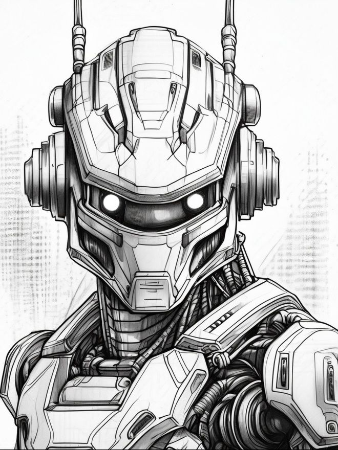

Robotics Research Centre
Research Areas
- Artificial Intelligence and Machine Learning in Robotics: Enhancing the capabilities of robots through intelligent decision-making and autonomous learning.
- Autonomous Vehicles and Drones: Developing robots that can operate autonomously in complex environments, including self-driving cars and drone delivery systems.
- Human-Robot Interaction: Improving the ways in which humans and robots collaborate, focusing on usability, safety, and communication.
- Industrial and Service Robotics: Creating robots for manufacturing, assembly, and logistics to improve efficiency, precision, and safety in industrial settings.
- Robotics for Healthcare: Designing robots that assist in surgeries, rehabilitation, and patient care, improving healthcare delivery and outcomes.
- Robotic Process Automation (RPA): Using robots for automating repetitive tasks in business and administrative processes to increase productivity and reduce errors.
- Soft Robotics: Developing robots made of flexible materials to safely interact with delicate objects and work in environments that are not suitable for traditional rigid robots.
Back to Home